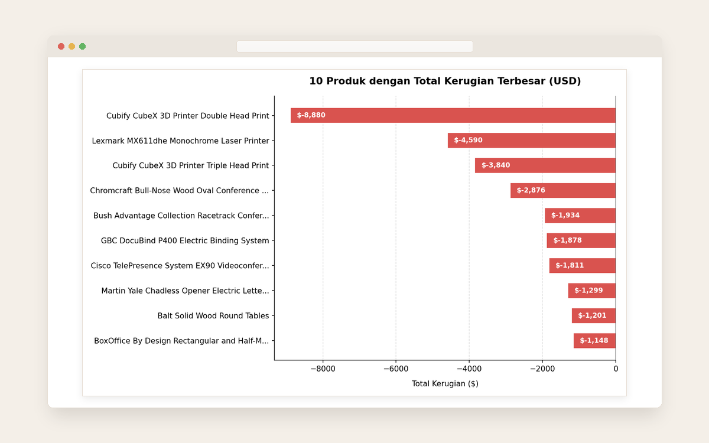

01 / Business Analytics · SQL Diagnostics
Product Profitability & Discount Governance
Diagnostik 9.994 transaksi ritel: membuktikan 299 produk rugi (-$77K) bukan akibat cacat produk, melainkan diskon ekstrem (rata-rata 29,26% vs 12,42%). 80,9% produk terbukti viabel jika diskon dibatasi maksimal 20%.
MySQL 8.0
Python
Executive Deck
Buka Executive Deck ↗